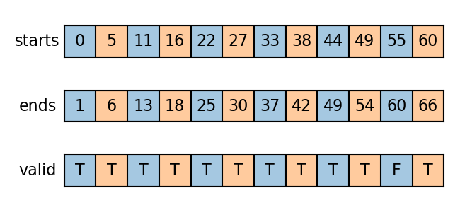
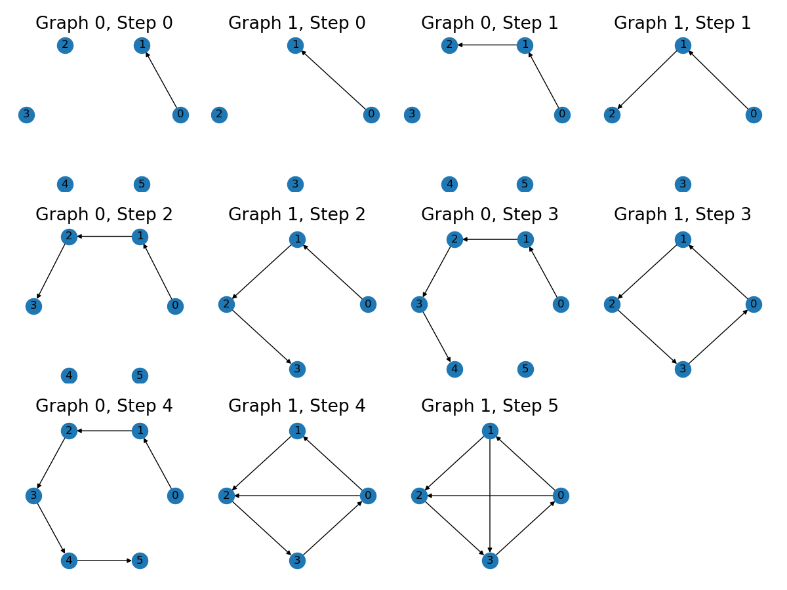

Batch Irregular Structures¶
Unlike images, text and audio, graphs usually have irregular structures, which makes them hard to batch in tensor frameworks. Many existing implementations use padding to convert graphs into dense grid structures, which costs much unnecessary computation and memory.
In Drugdiscovery, we develop a more intuitive and efficient solution based on variadic functions. The variadic functions can directly operate on sparse irregular inputs or outputs.
Variadic Input¶
Here we show how to apply functions to variadic inputs.
Generally, a batch of \(n\) variadic tensors can be represented by a value tensor and a size tensor. The value tensor is a concatenation of all variadic tensors along the variadic axis, while the size tensor indicates how big each variadic tensor is.
Let’s first create a batch of 1D variadic samples.
import torch
samples = []
for size in range(2, 6):
samples.append(torch.randint(6, (size,)))
value = torch.cat(samples)
size = torch.tensor([len(s) for s in samples])
{kind=link}
We apply variadic functions to compute the sum, max and top-k values for each sample.
from drugdiscovery.layers import functional
sum = functional.variadic_sum(value, size)
max = functional.variadic_max(value, size)[0]
top3_value, top3_index = functional.variadic_topk(value, size, k=3)
Note variadic_topk accepts
samples smaller than \(k\). In this case, it will fill the output with the
smallest element from that sample.
{kind=link}
Mathematically, these functions can be viewed as performing the operation over each sample with a for loop. For example, the variadic sum is equivalent to the following logic.
sums = []
for sample in samples:
sums.append(sample.sum())
sum = torch.cat(sums)
Note
In spite of the same logic, variadic functions is much faster than for loops on GPUs (typically \(\text{batch size}\times\) faster). Use variadic functions instead of for loops whenever possible.
Many operations in graph representation learning can be implemented by variadic functions. For example,
Infer graph-level representations from node-/edge-level representations.
Perform classification over nodes/edges.
Here we demonstrate how to perform classification over nodes. We create a toy
task, where the model needs to predict the heaviest atom of each molecule. Note
that node attributes form variadic tensors with num_nodes from the same graph.
Therefore, we can use variadic_max
to get our ground truth.
from drugdiscovery import data, models, metrics
smiles_list = ["CC(=C)C#N", "CCNC(=S)NCC", "BrC1=CC=C(Br)C=C1"]
graph = data.PackedMolecule.from_smiles(smiles_list)
target = functional.variadic_max(graph.atom_type, graph.num_nodes)[1]
Naturally, the prediction over nodes also forms a variadic tensor with num_nodes.
model = models.GCN(input_dim=graph.node_feature.shape[-1], hidden_dims=[128, 128, 1])
feature = model(graph, graph.node_feature.float())
pred = feature["node_feature"].squeeze(-1)
pred_prob, pred_index = functional.variadic_max(pred, graph.num_nodes)
loss = functional.variadic_cross_entropy(pred, target, graph.num_nodes)
accuracy = metrics.variadic_accuracy(pred, target, graph.num_nodes)
See also
variadic_sum,
variadic_mean,
variadic_max,
variadic_topk,
variadic_log_softmax,
variadic_cross_entropy,
variadic_accuracy
Variadic Output¶
In some cases, we also need to write functions that produce variadic outputs. A typical example is autoregressive generation, where we need to generate all node/edge prefixes of a graph. When this operation is batched, we need to output variadic numbers of graphs for different input graphs.
Here we show how to generate edge prefixes for a batch of graphs in Drugdiscovery. First, let’s prepare a batch of two graphs.
edge_list = [[0, 1], [1, 2], [2, 3], [3, 4], [4, 5]]
graph1 = data.Graph(edge_list, num_node=6)
edge_list = [[0, 1], [1, 2], [2, 3], [3, 0], [0, 2], [1, 3]]
graph2 = data.Graph(edge_list, num_node=4)
graph = data.Graph.pack([graph1, graph2])
with graph.graph():
graph.id = torch.arange(2)
{kind=link}
The generation of edge prefixes consists 3 steps.
Construct an extended batch with enough copies for each graph.
Apply an edge mask over the batch.
Remove excess or invalid graphs.
The first step can be implemented through
Graph.repeat. For the following steps, we
define an auxiliary function all_prefix_slice. This function takes in a size
tensor and desired prefix lengths, and outputs \(n*l\) prefix slices for the
extended batch, where \(n\) is the batch size and \(l\) is the number of
prefix lengths.
def all_prefix_slice(size, lengths=None):
cum_sizes = sizes.cumsum(0)
starts = cum_sizes - sizes
if lengths is None:
max_size = sizes.max().item()
lengths = torch.arange(0, max_size, 1, device=sizes.device)
pack_offsets = torch.arange(len(lengths), device=sizes.device) * num_cum_xs[-1]
starts = starts.unsqueeze(0) + pack_offsets.unsqueeze(-1)
valid = lengths.unsqueeze(-1) <= sizes.unsqueeze(0)
lengths = torch.min(lengths.unsqueeze(-1), sizes.unsqueeze(0)).clamp(0)
ends = starts + lengths
starts = starts.flatten()
ends = ends.flatten()
valid = valid.flatten()
return starts, ends, valid
lengths = torch.arange(1, graph.num_edges.max() + 1)
num_length = len(lengths)
starts, ends, valid = all_prefix_slice(graph.num_edges, lengths)
The slices are visualized as follows. Two colors correspond to two input graphs.
{kind=link}
graph = graph.repeat(num_length) # step 1
mask = functional.multi_slice_mask(starts, ends)
graph = graph.edge_mask(mask) # step 2
graph = graph[valid] # step 3
The output batch is
